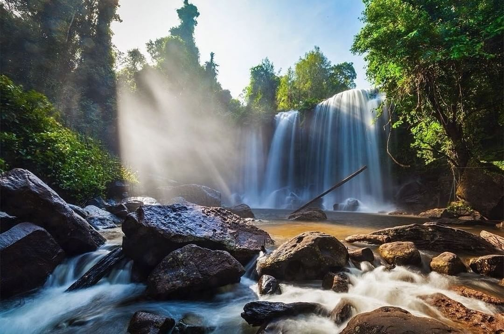

អង្គរធំ
រាជធានីអង្គរធំគឺជារាជធានីចុងក្រោយគេបង្អស់ និងឋិតថេរជាងគេនៃសម័យអង្គរ រហូតដល់សតវត្សរ៍ទី១៥ ដែលជារាជធានីដ៏អស្ចារ្យមួយ និងជាកន្លែងសាសនា និងរដ្ឋបាលនៃអាណាចក្រខ្មែរ។ ទីក្រុងនេះត្រូវបានកាសាងឡើងនៅចុងសតវត្សទី១២ដោយព្រះបាទជ័យវរ្ម័នទី៧
បាយ័ន
ពាក្យថាបាយ័ន អ្នកគ្រូ ពៅ សាវរស បានលើកយកគំនិតរបស់លោក ប្វាស្សឺលីយ៉េរ៍ (Boisselier) ដែលបានកំណត់លើឫសនៃពាក្យនេះ ដោយបានលើកឡើងថា បាយ័នជាស្នាដៃរបស់ ព្រះបាទជ័យវរ្ម័នទី៧ ដែលបានកសាងនៅក្នុងប្លង់ខុសគេ មានរាងមូល ដែលរំលឹកដល់យន្ត្រ។
បាខែង
ប្រាសាទភ្នំបាខែងត្រូវបានកសាងនៅឆ្នាំ៩០៧នៃគ.ស ក្នុងរាជកាលព្រះបាទយសោវរ្ម័នទី១។ ប្រាសាទនេះស្ថិតនៅចំពីលើកំពូលភ្នំធម្មជាតិមួយ ដែលមានទីតាំងនៅចំកណ្តាលទីក្រុងយសោធរបុរៈ ឬអង្គរទី១ហើយស្ថិតនៅចន្លោះប្រាសាទអង្គរវត្ត និងក្រុងអង្គរធំ។

ព្រះខ័ន
ព្រះខ័ន មានន័យថាដាវ។ តាមការស្រាវជ្រាវនៅពេលថ្មីៗ នេះ ប្រជាជនយល់ថា ប្រាសាទព្រះខ័ន ជាទីកន្លែងដាក់គ្រឿងសម្រាប់ធ្វើសឹក។ ដូច្នេះ ព្រះខ័ន គឺជាឈ្មោះទំនើបនៅរក្សា ឈ្មោះពីបុរាណ ពោលគឺ ជ័យស្រី នេះមានន័យថា ព្រះខ័ន និងមានន័យម៉្យាងទៀតថា ម្លូ
នាគព័ន្ធ
ប្រាសាទនាគព័ន្ធមានទីតាំងស្ថិតនៅក្នុងភូមិលាងដៃ ឃុំលាងដៃ ស្រុកអង្គរធំ ខេត្តសៀមរាប ។ ប្រាសាទនាគព័ន្ធត្រូវបានសាងសង់ឡើងនៅរជ្ជកាល ព្រះបាទជ័យវរ្ម័នទី៧ នាឆ្នាំ ១១៩១ ដើម្បីឧទ្ទិសថ្វាយព្រះពុទ្ធសាសនាមហាយាន ។
បារាយណ៍
បារាយណ៍ខាងលិច ឬបារាយណ៍ទឹកថ្លាត្រូវបានកសាងឡើងនៅក្នុរជ្ជកាលព្រះបាទឧទយាទិត្យវរ្ម័នទី២ នៅពាក់កណ្តាលសតវត្សទី១១។ នៅខាងលិចរាជធានីអង្គរ ព្រះបាទឧទ័យទិត្យវរ្ម័នទី២ បានជីកអាងស្តុកទឹកធំមួយ មានបណ្តោយ ៨គីឡូម៉ែត្រ និងទទឹងប្រវែង ២.២០០គីឡូម៉ែត្រ។
